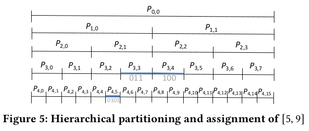

Books
A Thousand Acres
https://www.amazon.com/Thousand-Acres-Novel-Jane-Smiley/dp/1400033837
A Thousand Acres basically an adaptation of King Lear, set in rural Iowa in a rural farming community. It’s a deliberate reinterpretation, portraying Larry / King Lear much less sympathetically (and trying to humanize the “evil” daughters Ginny / Goneril and Rose / Regan). The ending is also fairly different (although still quite bleak).
Overall, I enjoyed the book – it was well-written and engaging, but there was nothing that made me really fall in love with it. I did learn a surprising amount about farming though (although I question how accurate the depiction of rural life was, given that the author doesn’t seem to be from a farming background themselves). For instance, I had no idea that you needed to install drain tiles (essentially underground pipes that drain ground water) into fields to allow heavy machinery to work.
One interesting thing about the experience is that when I read the book summary on the book (which references “dark truths” about the family that are brought to light), I immediately jumped to the idea that “the father (King Lear) sexually abused his daughters” (although I wasn’t certain whether Cordelia or Goneril + Regan were abused). It turns out I was correct (Goneril + Regan were raped in this telling), but I’m not entirely sure what this says about me or our literary culture (especially since A Thousand Acres is from 1991 and not particularly contemporary).
Articles / Blog Posts
- Inside Operation Warp Speed: Operation Warp Speed was the Federal government project for developing, manufacturing, and distributing Covid-19 vaccines. Obviously, it was a huge success on the first two: vaccines were developed, tested, approved, and manufactured in record times. Although the article did an ok job describing how OWS happened, but I didn’t find the analysis for why OWS to be super novel – some of that is because I was already familiar with some of the ideas (like buyers of first resort or the valley of death), but some of it because the article really didn’t go into enough detail on some crucial parts. In particular it talks about the “scale up” problem in American R&D work, but never actually talks about how OWS scaled up other than some vague references to “supply chain mapping”. Like, what does that actually entail? How do you do a good job mapping the supply chain and where does it go wrong? What happens if you don’t do supply chain mapping? Despite these gripes, I thought the article did a good job positioning OWS as a uniquely successful triumph that should be studied and learned from.
- Why LSP – this is a nice perspective on the rise of LSP and how IDE-like features become widespread from someone who actually writes IDEs for a living. The the article is a little poorly worded, but The article basically argues that the common story for why LSPs are great (saving work by turning an \(O(m \cdot n)\) problem into a \(O(m) + O(n)\) problem) isn’t quite correct, since the glue code between language servers and editors is pretty trivial. Instead, the article argues that by creating a functioning LSP for C# and TypeScript along with the VSCode editor to support it, Microsoft created a new equilibrium where people expected languages to implement LSPs (to hook into VSCode) while also expecting editors to hook into LSPs (now that VSCode offered those features).
- Three Architectures for Responsive IDEs – a nice description about how IDEs work and how they intersect with language design. I always vaguely knew that certain langugage features are “hard” to support properly in IDEs, but it was nice to see specifics about how some language features (like Rust’s macros and scoping rules) can make even simple things like name resolution difficult. This is the sort of content that I wished was circulated more widely in compiler classes – while it might not be important for the language itself, I think good IDE support is pretty much table-stakes for any new language ecosystem.
- How the Claremont Institute Became a Nerve Center of the American Right: I had vaguely heard of the Claremont Institute as the “intellectual Trumpist” center before, but this article gave me a little more color on who exactly they were, what they believe in, and how prominent they really are. I don’t have too many specific thoughts here (I try not to give judgements based on single secondary sources), but the article did a good job pointing out where to look if I ever want to dig in more.
- Introducing Husky: Husky is Datadog’s 3rd generation event store (which I think is just a very wide column store with, where some fields are very sparse). The architecture seems pretty straightforward, and I can definitely see the design influence of other “cloud-native disaggregated” databases like Snowflake (e.g. leveraging a blob store like S3 for the durability guarantees, etc). There’s not a whole lot of detail, but it’s an interesting data point about the rise of these “disaggregated” cloud-native service designs.
- What I Miss about Working at Stripe: This is basically a love-letter to (paraphrasing) “workplaces where people really care” – that is places where people really buy into the core mission and work with both high intensity and a high quality bar. I didn’t quite get the same experience interning at Stripe (I remember my internship being fairly relaxed), but I recognize part of the described Stripe culture and definitely experienced something similar at CTRL-labs). I’m of two minds here – I think these environments can be incredibly rewarding + fulfilling, and so am definitely sympathetic to the nostalgia. At the same time, I’ve definitely seen how this can be incredibly unhealthy for people, even when the organization’s not deliberately exploitative. I haven’t quite thought through how to distinguish “healthy passion + engagement” vs “unhealthy obsession”.
- The Barbados Rebellion: This feature is specifically about Mia Mottley (the prime minister of Barbados) and her efforts to create a climate financing system, but is more broadly a story about climate change’s effect on poorer nations of the world. I knew abstractly that climate change is a disaster for poor island countries, but it was definitely much more evocative with all the details. I also very much appreciated the nitty-gritty about IMF internal politics (adapting to new climate change paradigms but probably not fast enough), international banking, and government negotiations (hurricane clauses!).
- What should GDP measure: This was a short article that helped me clarify how to think about GDP. I used to think of GDP as essentially an easier way of calculating GDI (Gross Domestic Income, or the total income everyone had), but Kling adds the perspective that GDP measures “the extent of the market”. I think this new perspective is quite useful about thinking through what GDP is not (do we want everything to be on the market and so included in GDP?).
- A whirlwhind introduction to dataflow graphs: This is an article that I wish I had thought of independently, about a simple dataflow mental model to reason about instruction-level parallelism. I think I knew all the “facts” needed to do this analysis before-hand, but it was still instructive to see it all put together and used to analyze some actual examples.
Papers
Birds and Frogs
https://www.ams.org/notices/200902/rtx090200212p.pdf
This was a nice fun paper contrasting two different “types” of thinkers: “frogs” who get down-and-dirty with very specific problems and “birds” who soar above and try to connect different areas of mathematics together. Dyson goes through a series of famous mathematicians/physicists trying to classify them as either birds and frogs, arguing that both are necessary for forward progress. I found this paper fun and breezy to read (with many historical tidbits I wasn’t familiar with like von Neumann’s “warmed up soup” lecture)
Photon: A Fast Query Engine for Lakehouse Systems
https://doi.org/10.1145/3514221.352605410.1145/3514221.3526054
This paper describes Databricks' new (proprietary) query engine for Apache Spark built for “lakehouse” architectures (architecture where queries executed against “raw” data (e.g. Parquet files on S3) that haven’t been cleaned, indexed, or curated).
This was definitely more of an engineering-oriented paper – I don’t think there was anything super novel on the design side (this seemed like a fairly “standard” C++ vectorized query engine with microadapatvity a la Vectorize). The interesting meat in the paper was about the actual engineering experience things like “how to get the JVM and C++ memory managment to play well?” or “how to ensure compatibility with existing Spark operators?” or “what was our testing strategy” or “what was our testing strategy?”.
The authors' arguments about why they chose a vectorized query engine instead of a query compiler was particularly interesting since Databricks has already built a Spark query compiler before. Some of the tradeoffs are pretty similar to the ones noted in Kersten et al’s bakeoff, namely that:
- When the virtual call overhead is too much, it’s relatively easy to build specialized “fused” operators specific to that use-case.
- Vectorized execution engines are easier to debug, because you can use “standard” tooling for C++ instead of having to manually inject debugging information into runtime generated code.
- Vectorized execution engines are easier to instrument + monitor, since (virtual) function calls + stack frames are preserved (instead of being all inlined away in a compiled query) and you can easily obtain “operator-at-a-time” statistics.
- Vectorized execution engines are easier to make adaptive, since you don’t need to juggle multiple compiled queries for different data characteristics.
I do wonder how true these claims would be if there was somebody w/ expertise in JIT compilation (a la V8 or Graal), since they have to deal with pretty much all of these issues. I always assumed that this kind of thing was deep black magic, but maybe that’s just a measure of my own ignorance rather than any objective sense of complexity?
Although I thought these kinds of engineering considerations were really well written + explained, I found the experimental evaluation to be less satisfying – Databricks mostly benchmarked against fairly artificial micro-benchmarks. It would’ve been nice to dig into the TPC-H and TPC-DS results a little more and pinpoint (1) where time is still being spent in Photon, (2) how things stack up against an old school “data warehouse” type architecture, and (3) how crucial the adaptive runtime is to the speed-ups. My impression was that while the “sparsity adaptation” (e.g. adapting based on how much data is NULL) is super important, I didn’t get a good sense of how common their “string” happy-paths were (e.g. ASCII-only vs UTF-8, or UUID specialized query paths), or whether there were other heuristics to store.
Fixes That Fail: Self-Defeating Improvements in Machine-Learning Systems
https://proceedings.neurips.cc/paper/2021/hash/619427579e7b067421f6aa89d4a8990c-Abstract.html
I would call this a “Machine Learning Engineering Vision” paper – I think it did a good job identifying a set of challenges for building real-world machine learning systems, but it didn’t go much further than that.
The problem setup is that, in practice, many machine learning systems are not trained end-to-end. Instead, you often have multiple independent machine learning algorithms that depend on each other’s outputs (e.g. a generic “embedding” model with different feature heads that are trained separately).
The authors introduce a decomposition of the “system-level” error into three parts:
- Upstream error: how much the upstream model diverges from the “optimal” model
- Downstream approximation error (I would call this downstream misspecifcation error): how much the optimal downstream model of that type diverges from the globally optimal downstream model
- Downstream estimation error: how much the downstream model diverges from its optimal form.
The basic problem is that improving the upstream error can actually make these errors worse, even after retraining the downstream model: for instance, the upstream model improvement might not be exploitable by the downstream model architecture (increasing the downstream approximation error), or the upstream model’s loss function diverge from the downstream model’s loss function (increasing the upstream error).
They end with a self-driving car example, which I found a little artificial (although I’m also not familiar with the domain). They didn’t really introduce any solutions to the challenges presented here, and was more of a call-to-action.
Plor: General Transactions with Predictable, Low Tail Latency
https://doi.org/10.1145/3514221.3517879
This paper introduces a new concurrency control protocol for databases with an emphasis on lowering tail latency. Traditional 2PL can have poor throughput in low-contention scenarios due to lock overhead, while OCC can have extremely poor tail latencies since “unlucky” transactions can just endlessly retry. The paper introduces a “Pessimistic Locking Optimistic Reading” protocol that tries to blend the two ideas.
I found the paper’s description pretty hard to follow – I don’t know what it was, but I had to go through Section 4.1 three or four times before I felt like I really understand the protocol. I think of PLOR as basically OCC, except we always try to abort the younger transaction (allowing the older transaction to make progress). They do this by (1) using locks to eagerly resolve write-write conflicts during the initial OCC “read” phase (using WOUND WAIT) and (2) recording which transactions are reading/writing to each row so we can know which transactions to abort when checking for conflicts.
Although this was an interesting idea, I didn’t find this paper convincing on a number of levels:
- I don’t think the authors did a good job establishing what the “target
latency” should be for any actual set of applications. In the evaluation,
even the “high-latency” protocols had P999 latencies of 5-ish ms which…
doesn’t seem that high (a single spinning disk seek can easily have that
latency)? Especially in the context of a distributed database with
potentially multiple network round trips, how important are these gains in
practice?
- Their UNDO / REDO logging was implemented using Optane which might be part of this? This seems like a weird choice to me – even at the time of publication I wasn’t aware of any real-world large-scale deployment of Optane, let alone now when Intel has officially retired Optane.
- At the protocol level, they didn’t do the work of integrating PLOR with MVCC.
This seems like a weird hole on two levels:
- AFAIK every new production database engine has used some form of MVCC over the last 10 years, so it seems like a natural thing to do.
- MVCC guarantees that read-only transactions don’t conflict with anything, which could potentially actualy improve PLOR throughput (reducing the degree to which “reads execute writes” by registering themselves for each row). The authors sort of sneak by this by actually executing read-only transactions using pure OCC and only falling back to PLOR after 3 aborts, but MVCC seems more principled.
HINT: A Hierarchical Index for Intervals in Main Memory
https://doi.org/10.1145/3514221.3517873
This was a nice, sweet paper about intersection queries for contiguous ranges – basically, given a set of \([a, b]\) intervals, we want to find all intervals that intersect some \([l, u]\) query.
The image below is the key idea: given a \([0, 2^m]\) domain, we can recursively (and hierarchically) partition up your space into “subintervals”. Each subinterval \(P_{l, f}\) stores the set of intervals whose integer bounding box is fully contained within \([f \cdot 2^{m-l}, (f + 1) \cdot 2^{m-l}]\). Note that any interval we want to store is going to be contained by at most 2 subintervals per level.

To execute queries, we just loop through all “subpartitions” that intersect our query interval and search their subcomponents. In effect,
The rest of the paper defines how to generalize this scheme to arbitrary domains (essentially define a remapping function into \([0, 2^m-1]\)), how to define the optimal \(m\) (trading off # of subintervals to visit with the # of stored intervals per subinterval you need to handle), and some implementation optimizations.
I didn’t read the performance evaluations super closely since I’m not familiar with the evaluation norms here, but the evaluation seemed detailed, plausible (a mix of real-world and synthetic data on a variety of conditions), and impressive (much faster queries than competitors at the cost of slower updates). Overall, I thought this was a neat idea!
Finding real bugs in big programs with incorrectness logic
https://doi.org/10.1145/3527325
This paper goes through some details about actually applying incorrectness logic into real-world static analysis.
Incorrectness logic is the sort of “dual” with Hoare logic – in Hoare
logic, you have {P} C {Q} which roughly means “if P is true and then
code C executes, then Q must be true”, while in Incorrectness logic you
have [P] C [Q] which means “if P is true and C executes, then Q can
be true”. Hoare logic is often used for formal verification (e.g. Q is
roughly “implemented correctly”), but the authors argue that
incorrectness logic is more natural for bug-finding static analysis (Q
is something like “is a bug”).
I don’t understand the type thoery enough to fully grok the details of the analysis, but it roughly follows the shape of the “compositional analysis” described here. I think the interesting part from a non-specialist was the distinction between “latent bugs” and “manifest bugs”. Suppose you find a bug that “could” occur based on your analysis – who do you know whether this is a “real” bug or a missing pre-condition you didn’t know about (e.g. an undocumented assumption that a pointer is not null)? The authors argue that the “right” answer is based on social reasons (what do software engineers expect in practice?) and come up with some heuristics here.
Decentralized Society: Finding Web3’s Soul
https://papers.ssrn.com/sol3/papers.cfm?abstract_id=4105763
This is a Web3 paper introducing the idea of “soulbound” tokens. A “soul” is basically a single wallet / digital entity, and a soulbound token is a token that can’t be transferred (only given out / revoked). The big idea is to use soulbound tokens to represent community identities (for instance, a school “soul” could issue soulbound tokens to its alumni) – if there are enough souls with overlapping communities, this could plausibly let you capture lots of social information and expose it to smart contracts (e.g. to distinguish real humans from bots).
I thought this was definitely a clever idea that opens up some interesting possibilities, but I was less convinced that any of the suggested applications were actually good ideas as-is. Like most of the work on Web3 here, this feels very much like a hammer looking for a nail. Like, these are definitely a cool set of ideas and I could totally believe that the “next big thing” will build on top of these, but I’m still sort of waiting for an actual concrete use-case to use this for (that isn’t self-referentially motivated by interoperability on some blockchain).
Enabling the Next Generation of Multi-Region Applications with CockroachDB
https://doi.org/10.1145/3514221.3526053
This was a neat paper about how CockroachDB built globally distributed replication into their database. This was a very well-written paper – I found it extremely well-motivated and easy to follow.
In particular, every table can be configured with different survivability
configurations (e.g. SURVIVE ZONE FAILURE) and locality settings (GLOBAL,
REGIONAL BY ROW, REGIONAL BY TABLE). Survivability settings determine how
data is replicated across nodes, while the locality setting determimnes how the
data is treated by the query optimizer (GLOBAL tables get low-latency reads
from all regions at the expense of slowe writes, while REGIONAL rows get
low-latency reads form the “home” region at the cost of higher-latency reads
everywhere else).
Obviously, building this information into the databases reduces the burden on the application programmer, but it also allows CockroachDB to automatically enforce “best practices” (e.g. enforcement of global unique constraints) and to exploit region properties during query planning (e.g. minimizing data movement by exploiting UNIQUE constraints). I’m not sure they did a good job establishing that this desired information was “sufficient” for all geo-replication use-cases, but it did a good job arguing that these features worked for at least a substantial portion of use-cases.
Formality Considered Harmful: Experiences, Emerging Themes, and Directions on the Use of Formal Representations in Interactive Systems
https://doi.org/10.1023/A:1008716330212, or accessible at https://www.csdl.tamu.edu/~shipman/papers/cscw.pdf
This is an HCI paper about the mismatches between human needs and the “formality” that most computer systems require. I think the key quote here is:
When formalisms are embedded in computer systems, users often must engage in activities that might not ordinarily be part of their tasks: breaking information into chunks, characterizing content with a name or keywords, categorizing information, or specifying how pieces of information are related.
The paper goes through a couple examples of this – although the specifics are fairly dated (the paper was written in 1999), analogies to modern systems are pretty obvious (who hasn’t dealt with “what folder hierarchy should I use” or “should I setup a tagging system”?).
The paper did a good job describing the problem, but I found the suggested solutions to be unhelpful. Basically, the suggestions boil down to “make sure to use the “right” formalisms”, “see if ou can make formalization incremental”, and “see if you can rely on informal organizations (e.g. spatial organization, or textual search)”, but their examples of each were either (1) not very detailed or (2) too dated to the 1990s for me to really understand the suggestion. It’d be interesting to see a refreshed version of this paper with more modern references + examples.
Relational E-matching
https://doi.org/10.1145/3498696
This is my favorite type of paper: something that applies a technique from one field to a problem in a separate field and gets large speedups.
E-graphs are data structures for representing equivalence classes of
function calls, and can be used for compiler optimizations (google
equality saturation). One key part of this is “e-matching”, which is
essentially pattern matching on e-graphs (e.g.X - X => 0). This paper
makes two observations:
- E-graphs can be easily represented as relational databases
- E-matching essentially reduces to conjunctive queries on these databases.
Conjunctive queries on relational databases are super well-studied, so this opens up a bunch of techniques. In particular, the authors apply the “generic” worst-case optimal join algorithm to actually solve these conjunctive queries, which are (as the name implies) asymptotically optimal algorithms. Unsurprisingly, this gives large speed-ups over the previous state-of-the-art.
I think this paper was very well done, but I wish they went further on a number of axes:
- They integrated their algorithm into an existing Rust library for e-graphs (egg), but I wished they had pushed their “e-graphs as relational databases” further and looked at whether you could just use a Datalog database for storing + querying e-graphs. There are some pretty fast + specialized Datalog engines (e.g. Souffle), and it’d be interesting to see how much the “specialized e-graph” functionality from egg was important.
- I wished the authors had explained more about how their joins are actually implemented. There’s an increasing amount of literature on the implementation of these joins (and not just their asympotitcs), and I suspect the authors could do even better by adopting some of these tricks.
A tree clock data structure for causal orderings in concurrent executions
https://doi.org/10.1145/3503222.3507734
This paper introduces a “tree clock”, which is faster version of a vector clock. The key idea is that tracking the “provenance” of information lets you “skip” some updates. For example, suppose we have the following three operatoins:
- \(\mathbb{C}_2 = \mathbb{C}_1 \oplus \mathbb{C}_2\)
- \(\mathbb{C}_3 = \mathbb{C}_2 \oplus \mathbb{C}_3\)
- \(\mathbb{C}_3 = \mathbb{C}_1 \oplus \mathbb{C}_3\)
Then the 3rd join operation is entirely redundant – because \(\mathbb{C}_1\) hasn’t been updated since operation 1, any “new” information that it carries must have already been transmitted to \(\mathbb{C}_3\) in step 2! A tree clock essentially takes this idea and generalizes it to more complicated cases (essentially you form a “tree” of provenances which track from which clocks you learned about which information). Thus, while vector clock operations generally take \(O(k)\) time (where \(k\) is the # of threads), tree clocks can be asymptotically faster.
I thought the idea was interesting, but found this paper to be pretty unsatisfying on a number of levels:
- The tree clock algorithm seems quite complicated and full of
data-dependent branching, and I suspect it has a much larger constant
factor than vector clocks even if they’re asymptotically faster. It
would’ve been nice to:
- Explicitly benchmark the # of threads we need until tree clocks are “worth it” over vector clocks.
- Investigate whether there are any low-level tricks we can use to optimize the tree clocks (for instnace, vector clocks can be pretty trivially SIMD accelerated – is there any such analogue with tree clocks?).
- It would’ve been good to contextualize the speed ups from tree clocks on some real applications (especially things like Go’s race detector where you might plausibly have millions of go routines). How does the speedup from the tree clocks compare to other sources of overhead in the overall application?
- As a style complaint, I found the paper’s notation to be pretty hard to follow, and there was way too much emphasis on formal definitions + theorems without enough intuitive explanations.
Handoff strategies in settings with high consequences for failure: lessons for health care operations
https://doi.org/10.1093/intqhc/mzh026
This paper is essentially a summary of a series of interviews for “handoffs” (transitions between shifts) in “high-stakes” situations (e.g. nuclear reactors, ambulance dispatches, etc) trying to synthesize “common” strategies across the two. Although I found it informative, I feel like more things would’ve struck out at me if I was actually involved in an on-call rotation or consequence-heavy operations. As-is, most of the suggestions seemed pretty common-sensical and I don’t think I really remembered much. Someone more-in-the-trenches would probably have a better sense of what’s actually important / distinctive and what’s just “obvious”.
Potential Outcome and Directed Acyclic Graph Approaches to Causality: Relevance for Empirical Practice in Economics
https://doi.org/10.1257/jel.20191597
This was basically an economist comparing and contrasting the Rubin potential outcomes framework for causal inference with Pearl’s DAG framework. Imbens definitely comes down on the side of the potential outcomes framework, for a couple of reasons:
- Although Imbens agrees that DAGs have pedagogical advantages, he argues that in practice “most” causal inference is for fairly cookie cutter problems that are sufficiently well-understood that you don’t need DAGs (e.g. regression discontinuities or instrumental variables)
- DAGs have a sort-of artificial separation between “DAG specification” and the actual estimation + prediction tasks. Potential outcomes, OTOH, usually bundles these things together which makes them easier to actually use.
- The DAG framework doesn’t have great techniques for “feedback cycles”, where my current value influences your future value which influences my future value.
- Potential outcomes has a long established history in economics, while there’s not a great literature of DAGs being applied to real-world problems. Pedagogically, too much of the DAG literature is about “toy problems” with limited applicability to the real world.
As someone who’s never done much casual inference work and has only really encountered the DAG framework this was a super interesting read. Of these, I think only the 3rd is a technical weakness of DAGs (although it’s not clear to me how potential outcomes handles feedback cycles better) – the rest of the criticisms seem pretty cultural. That’s not to say they’re illegitimate of course – I definitely sympathize with the “toy” nature of most DAG introductions (which has also matched my experience). I think point 1 might also be an interesting commentary on “users” vs “developers” here – this strikes me as similar to how people treat statistics – while a lot of statisticians I know want to build fancy generative models for inference, most people seem to get by with cookie-cutter t-tests.
I hope the DAG and potential outcomes communites grow closer in the future though and harmonize on their notation + jargon – as a total outsider to causal inference, it’s pretty frustrating to have to navigate 3 different frameworks (DAGs for computer scientists, potential outcomes for economics, and marginal structural models / G-models for epidemiology) and it’d be great to have some kind of paradigm unification (if only to make it easier to understand what’s going on).
Understanding and exploiting optimal function inlining
https://doi.org/10.1145/3503222.3507744
This was a really fun paper, with a very simple idea: brute force all
possible inlining possibilities and check how close Clang’s -Os setting
gets to the smallest possible size. Naively, if you have a call graph
of \(E\) edges there are \(2^E\) possibilities which is clearly way too much
to search for even mildly complicated programs. But the key insight is
if you can “split” call graph into two components with a single edge
between them, then you only need to search \(2^{E-1} + 2^{E_1} + 2^{E_2} 1\)
possibilities (\(2^{E-1}\) possibilities if you inline that edge and
\(2^{E_1} + 2^{E_2} + 1\) if you don’t). This recursive partitioning turns
out to be “good enough” that you can actually search mildly complicated
programs exhaustively (the authors choose the SPEC2017 benchmark suite).